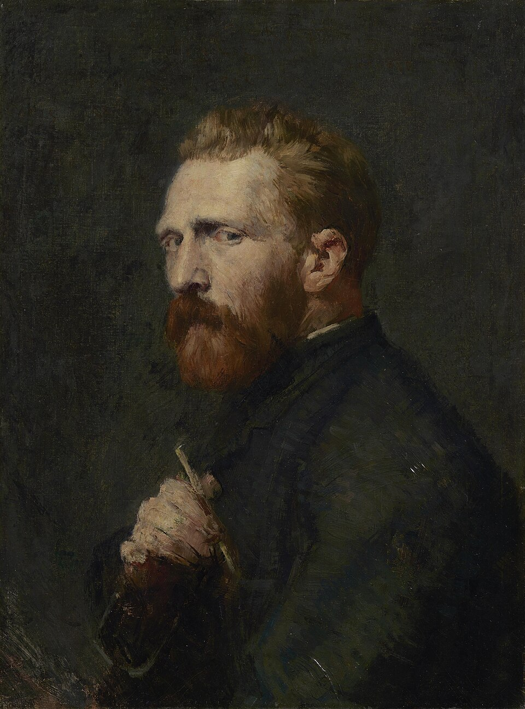

Figura clave del postimpresionismo, Van Gogh utilizó colores vibrantes y pinceladas audaces para expresar sus emociones. Aunque solo vendió un cuadro en vida, su influencia en el arte moderno es incalculable. Obras como "La noche estrellada" muestran su visión única y apasionada del mundo.